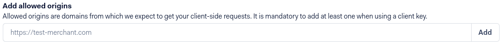

Adyen¶
Adyen es una empresa neerlandesa que ofrece varias posibilidades de pago en línea.
Ver también
Nota
Adyen solo trabaja con clientes que procesan más de 10 millones anualmente o que facturan un mínimo de 1.000 transacciones al mes.
Configuración¶
Ver también
Pestaña de credenciales¶
Odoo necesita sus credenciales API para conectarse con su cuenta de Adyen, que comprenden:
Cuenta de comerciante: el código de la cuenta de comerciante que se usará con Adyen.
Clave API: La clave API del usuario del servicio web.
Clave de cliente: la clave de cliente del usuario de servicio web.
Clave HMAC: la clave HMAC (código de autorización de mensajes basado en hash, por su siglas en inglés) del webhook.
URL de API de pago: el URL base para los puntos finales del API de pago.
URL de API recurrente: el URL base para los puntos finales de API recurrente.
Puede copiar las credenciales de su cuenta de Adyen y pegarlas en los campos relacionados en la pestaña de Credenciales.
Importante
Si está usando Adyen como prueba con una cuenta de prueba de Adyen, vaya a . Haga clic en Adyen, activar Modo de prueba e ingrese sus credenciales en la pestaña de Credenciales.
Clave API y clave de cliente¶
Para obtener su Clave API y su Clave de cliente, inicie sesión en su cuenta de Adyen y vaya a .
Si ya tiene un usuario API, ábralo.
Si todavía no tiene un usuario API, haga clic en Crear nuevas credenciales.
Vaya a y copie o genere su Clave API. Asegúrese de copiar su clave API pues no podrá obteneral después sin generar una nueva.
Ahora vaya a y copie o genere su Clave de cliente. Aquí también puede permitir que se hagan pagos desde su sitio web.
Clave HMAC¶
Para obtener la clave HMAC, necesitará configurar un webhook de Notificación estándar. Para hacer esto, inicie sesión en su cuenta de Adyen y vaya a .
Ahí, en , ingrese la dirección de su servidor seguido de /payment/adyen/notification.
Luego, vaya a . Tenga cuidado y copie la clave pues no se le permitira hacerlo después sin generar una nueva.

Debe guardar el webhook para finalizar su creación.
URLs de las API¶
Todas las URLs de las API de Adyen incluyen un prefijo específico de cada área del cliente que genera Adyen. Para configurar las URLs, siga los siguientes pasos:
Inicie sesión en su cuenta de Adyen y vaya a .
Copie el Prefijo para su área de cliente en directo (por ejemplo, centro de datos) y guárdela para después.

En Odoo, vaya al proveedor de pago Adyen.
En el campo URL de la API de pago, ponga la siguiente URL y reemplace
yourprefixpor el prefijo que guardo anteriormente:https://yourprefix-checkout-live.adyenpayments.com/checkoutEn el campo URL recurrente de las API, ponga la siguiente URL y reemplace
yourprefixcon el prefijo que guardo anteriormente:https://yourprefix-pal-live.adyenpayments.com/pal/servlet/Recurring.
Nota
Si está usando Adyen en modo de prueba, puede usar la siguiente URL en su lugar:
URL de la API de pago:
https://checkout-test.adyen.comURL recurrente de la API:
https://pal-test.adyen.com/pal/servlet/Recurring
Cuenta de Adyen¶
Permitir pagos de un origen específico¶
Para permitir pagos originados desde su sitio web, siga los pasos de Clave API y clave de cliente para ir a su usuario de API y vaya a , luego agregue las URL desde donde se realizaran los pagos (las URL de los servidores que alojan sus instancias de Odoo).
Hacer una retención de tarjeta de crédito¶
Adyen le permite capturar un importe manualmente en lugar de hacer una directa.
Para establecer la cuenta pendiente, active la opción Capturar importe manualmente en Odoo, como se explica en documentación sobre los proveedores de pago.
Luego, abra su Cuenta de comerciante de Adyen y vaya a , y cambie de Retraso de captura a manual.

Prudencia
Si configura Odoo para realizar las capturas manualmente, asegúrese de establecer el Retraso de captura a manual en Adyen. De lo contrario, la transacción se bloqueará en el estado de autorizado en Odoo.
Odoo aún no admite las capturas parciales. Considere que si realiza una captura parcial desde la interfaz de Adyen, Odoo la considerará como una captura completa.
Nota
Después de 7 dias, si la transacción aún no se ha capturado, el cliente tiene derecho a revocarla.
Ver también